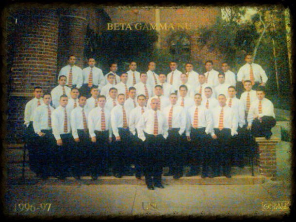

In 1997, Beta Gamma Nu was founded on the campus of the University of Southern California. The young men that founded the fraternity saw a need that was not being fulfilled and created a fraternal organization for students not being represented by the Greek system. Beta Gamma Nu, with its values of Pride in Culture, Brotherhood in Arms, and Respect for Life, seeks out men with common values to spread the message that a full college experience is in reach of all men.
Since its introduction to the Greek system, Beta Gamma Nu has expanded to other universities and has shared our values with men of like vision and inclusion of all into our brotherhood. The rich experience our fraternity brings to these students is one that will stay with them as they move into their professional careers.
As our fraternity grows in chapters and in members, it will have a positive influence on those students that it touches. Beta Gamma Nu is still a young fraternity among many great ones and the story of our fraternity is still being written. We are a diverse group of individuals, motivated to succeed in our professional careers and to teach the value of culture, education, brotherhood, respect for life, community, and family among our members.
One such chapter is right here in Fresno. The Fresno State Eta Chapter was established on May 24th 2013. Built on the pillars of Pride, Brotherhood, and Respect, our chapter began as a small group committed to uplifting one another academically, professionally, and personally.
Since then, Eta Chapter has grown into a tight-knit network of scholars and leaders who serve the Fresno State campus and the greater Fresno community through mentorship, volunteer outreach, and culturally grounded events. Today, our members balance academics with service and leadership—hosting study nights, partnering with campus orgs and local nonprofits, and cultivating an alumni pipeline that supports internships and career exploration for active brothers.
